Si responde "Sí" a los Números de Artículo 20. - 21. a continuación, provea una explicación en el espacio provisto en Parte 14. Información Adicional y consulte las Instrucciones Específicas por Número de Artículo, Parte 9. Información Adicional Acerca de Usted de las Instrucciones para obtener más información.
¿Ha sido removido(a) o deportado(a) ALGUNA VEZ de los Estados Unidos? Sí No
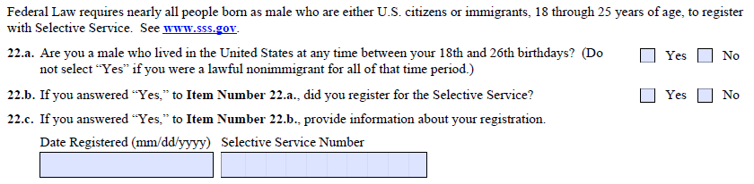
La ley federal requiere que casi todas las personas nacidas como hombres que son ciudadanos de los EE.UU. o inmigrantes, de 18 a 25 años de edad, se registren con el Servicio Selectivo. Consulte www.sss.gov.
22.a. ¿Es usted un varón que vivió en los Estados Unidos en cualquier momento entre su 18.° y 26.° cumpleaños? (No seleccione "Sí" si durante todo ese período de tiempo usted fue un no-inmigrante legal.) Sí No
22.b. Si respondió "Sí" al Número de Artículo 22.a., ¿se registró para el Servicio Selectivo? Sí No
22.c. Si respondió "Sí" al Número de Artículo 22.b., provea información sobre su registro.
Fecha de Registro (mm/dd/aaaa) Número del Servicio Selectivo
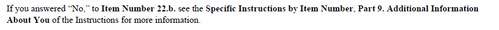
Si respondió "No" al Número de Artículo 22.b., consulte las Instrucciones Específicas por Número de Artículo, Parte 9. Información Adicional Acerca de Usted de las Instrucciones para obtener más información.
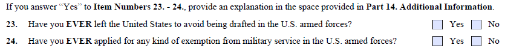
Si responde "Sí" a los Números de Artículo 23. - 24., provea una explicación en el espacio provisto en Parte 14. Información Adicional.
¿Se ha ido ALGUNA VEZ de los Estados Unidos para evitar ser reclutado a las Fuerzas Armadas de los EE.UU.? Sí No
¿Ha solicitado ALGUNA VEZ cualquier tipo de exención del servicio militar en las Fuerzas Armadas de los EE.UU.? Sí No
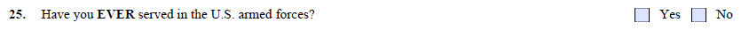
¿Ha servido ALGUNA VEZ en las Fuerzas Armadas de los EE.UU.? Sí No
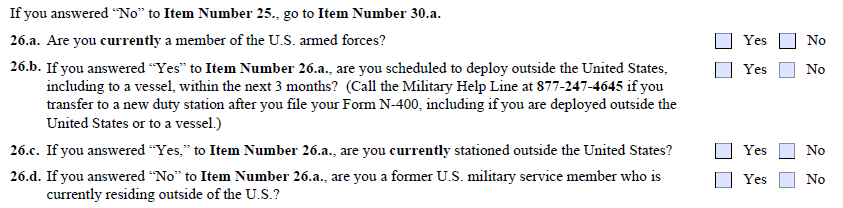
Si respondió "No" al Número de Artículo 25., pase al Número de Artículo 30.a.
26.a. ¿Es actualmente miembro de las Fuerzas Armadas de los EE.UU.? Sí No
26.b. Si respondió "Sí" al Número de Artículo 26.a., ¿está programado para desplazarse al extranjero, incluyendo a un barco, dentro de los próximos 3 meses? (Llame a la Línea de Ayuda Militar al 877-247-4645 si se transfiere a una nueva estación de servicio después de presentar su Formulario N-400, incluyendo si es desplegado(a) al extranjero o a un barco.) Sí No
26.c. Si respondió "Sí" al Número de Artículo 26.a., ¿está actualmente destacado(a) fuera de los Estados Unidos? Sí No
26.d. Si respondió "No" al Número de Artículo 26.a., ¿es usted un(a) exmiembro(a) del servicio militar de los EE.UU. que actualmente reside fuera de los Estados Unidos? Sí No
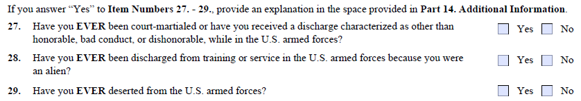
Si responde "Sí" a los Números de Artículo 27. - 29., provea una explicación en el espacio provisto en Parte 14. Información Adicional.
¿Ha sido llamado(a) ALGUNA VEZ a una corte marcial, o ha recibido una baja caracterizada como que no es honorable, mala conducta o deshonrosa, mientras estaba en las Fuerzas Armadas de los EE.UU.? Sí No
¿Ha sido dado(a) de baja ALGUNA VEZ del entrenamiento o del servicio en las Fuerzas Armadas de los EE.UU. por ser extranjero(a)? Sí No
¿Ha desertado ALGUNA VEZ de las Fuerzas Armadas de los EE.UU.? Sí No
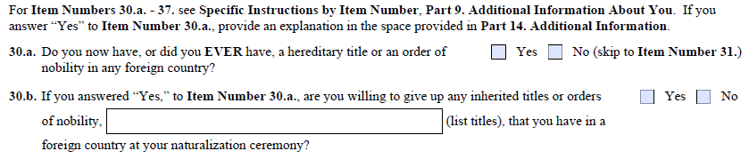
Para los Números de Artículo 30.a. - 37., consulte las Instrucciones Específicas por Número de Artículo, Parte 9. Información Adicional Acerca de Usted. Si responde "Sí" al Número de Artículo 30.a., provea una explicación en el espacio provisto en Parte 14. Información Adicional.
30.a. ¿Tiene ahora o ha tenido ALGUNA VEZ un título hereditario o una orden de nobleza en algún país extranjero? Sí No (pase al Número de Artículo 31.)
30.b. Si respondió "Sí" al Número de Artículo 30.a., ¿está dispuesto(a) a renunciar a cualquier título hereditario u orden de nobleza (liste los títulos), que tenga en un país extranjero en su ceremonia de naturalización? Sí No
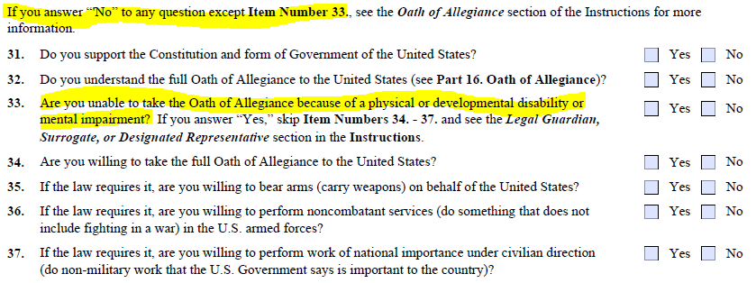
Si responde "No" a cualquier pregunta excepto el Número de Artículo 33., consulte la sección Juramento de Lealtad de las Instrucciones para obtener más información.
¿Apoya usted la Constitución y el sistema de gobierno de los Estados Unidos? Sí No
¿Comprende usted el juramento completo de lealtad de los Estados Unidos (consulte la Parte 16. Juramento de Lealtad)? Sí No
¿No puede usted tomar el Juramento de Lealtad a causa de una discapacidad física o de desarrollo o una deficiencia mental? Sí No Si responde "Sí," omita los Números de Artículo 34. - 37. y consulte la sección Tutor Legal, Sustituto o Representante Designado de las Instrucciones.
¿Está dispuesto(a) a tomar el juramento completo de lealtad de los Estados Unidos? Sí No
Si la ley lo requiere, ¿está dispuesto(a) a tomar armas (portar armas) en nombre de los Estados Unidos? Sí No
Si la ley lo requiere, ¿está dispuesto(a) a prestar servicios como no combatiente (hacer algo que no incluya combatir en una guerra) en las Fuerzas Armadas de los EE.UU.? Sí No
Si la ley lo requiere, ¿está dispuesto(a) a realizar trabajo de importancia nacional bajo dirección civil (realizar trabajo no militar que el Gobierno de los EE.UU. declare importante para el país)? Sí No
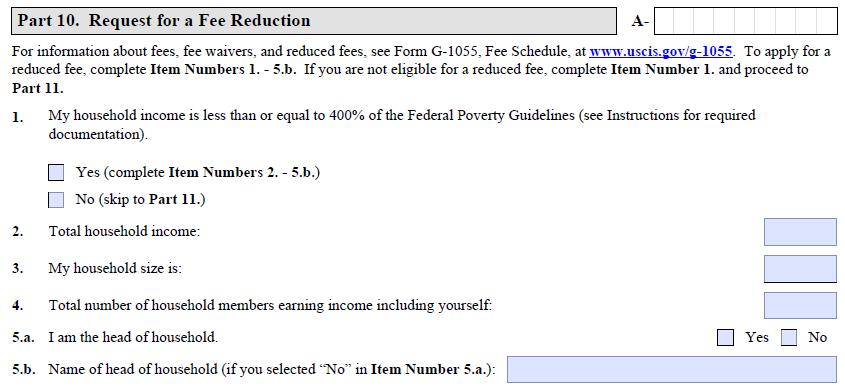
Parte 10. Solicitud de Reducción de la Tarifa A-
Para información sobre tarifas, exenciones de tarifas y tarifas reducidas, consulte el Formulario G-1055, Tabla de Tarifas, en www.uscis.gov/g-1055. Para solicitar una tarifa reducida, complete los Números de Artículo 1. - 5.b. Si no es elegible para una tarifa reducida, complete el Número de Artículo 1. y pase a la Parte 11.
El ingreso de mi hogar es menor o igual al 400% de las Pautas Federales de Pobreza (consulte las Instrucciones para conocer la documentación requerida).
Sí (complete los Números de Artículo 2. - 5.b.)
No (pase a la Parte 11.)
Ingreso total del hogar:
El tamaño de mi hogar es:
Número total de miembros del hogar que perciben ingresos, incluyéndose usted mismo(a):
5.a. Soy el (la) jefe(a) de hogar. Sí No
5.b. Nombre del (de la) jefe(a) de hogar (si seleccionó "No" en el Número de Artículo 5.a.):
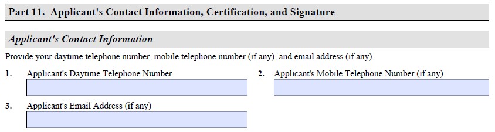
Parte 11. Información de Contacto, Certificación y Firma del Solicitante
Información de Contacto del Solicitante
Provea su número de teléfono de día, número de teléfono móvil (si alguno) y correo electrónico (si alguno).
Número de Teléfono de Día del Solicitante 2. Número de Teléfono Móvil del Solicitante (si alguno)
Correo Electrónico del Solicitante (si alguno)
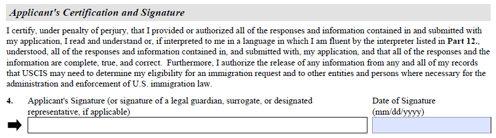
Certificación y Firma del Solicitante
Certifico, bajo pena de perjurio, que yo provei o autoricé todas las respuestas e información contenidas en mi solicitud y presentadas junto con ella; que leí y entendí, o, si me fueron interpretadas al idioma en que me comunico con fluidez por el intérprete indicado en la Parte 12., entendí, todas las respuestas e información contenidas en mi solicitud y presentadas junto con ella; y que todas las respuestas y la información están completas, son verdad y correctas. Además, autorizo la divulgación de cualquier información de cualquiera de mis registros que USCIS pueda necesitar para determinar mi elegibilidad para una solicitud de inmigración y a otras entidades y personas cuando sea necesario para la administración y aplicación de las leyes de inmigración de los EE.UU.
Firma del Solicitante (o firma de un tutor legal, sustituto o representante designado, si aplica) Fecha de la Firma (mm/dd/aaaa)
➜
NOTE: Part 12 (Interpreter Information) and Part 13 (Preparer Information) are omitted because they are to be filled in by the person performing these activities, not by the applicant. NOTA: Las partes 12 (Información del intérprete) y 13 (Información del preparador) se omiten porque deben ser completadas por la persona que realiza estas actividades, no por el solicitante.
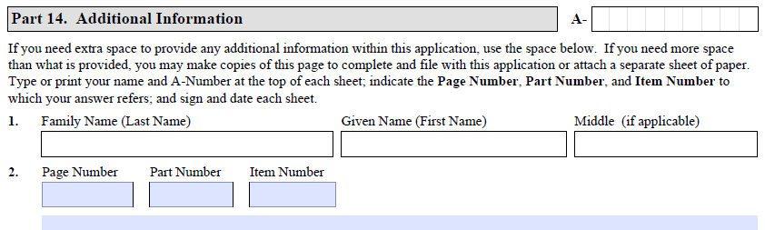
Parte 14. Información Adicional A-
Si necesita espacio adicional para proveer cualquier información dentro de esta solicitud, utilice el espacio a continuación. Si necesita más espacio del que se provee, puede hacer copias de esta página para completar y presentar junto con esta solicitud, o adjuntar una hoja de papel separada. Escriba a máquina o en letra de imprenta su nombre y Número A en la parte superior de cada hoja; indique el Número de Página, el Número de Parte y el Número de Artículo al que corresponde su respuesta; y firme y feche cada hoja.
Apellido Nombre Segundo Nombre (si aplica)
Número de Página Número de Parte Número de Artículo
NOTE: Part 15 SHOULD NOT BE FILLED IN OR SIGNED BEFORE THE IN-PERSON CITIZENSHIP INTERVIEW. NOTA: La Parte 15 NO DEBE completarse ni firmarse antes de la entrevista de ciudadanía en persona.
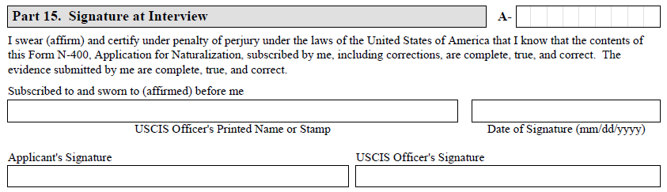
Parte 15. Firma en la Entrevista A-
Yo juro (afirmo) y certifico bajo pena de perjurio bajo las leyes de los Estados Unidos de América que sé que el contenido de este Formulario N-400, Solicitud de Naturalización, suscrito por mí, incluyendo las correcciones, están completos, son verdad y correctos. Las pruebas presentadas por mí están completas, son verdad y correctas.
Suscrito y jurado (afirmado) ante mí
Nombre o Estampilla del Oficial de USCIS Fecha de la Firma (mm/dd/aaaa)
Firma del Solicitante Firma del Oficial de USCIS
NOTE: Part 16 SHOULD NOT BE SIGNED BEFORE THE IN-PERSON CITIZENSHIP INTERVIEW. You must understand the complete oath before you agree and sign. NOTA: La Parte 16 NO DEBE firmarse antes de la entrevista de ciudadanía en persona. Debe comprender el juramento completo antes de aceptar y firmar.
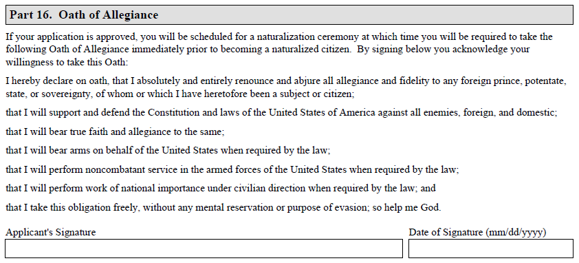
Parte 16. Juramento de Lealtad
Si su solicitud resulta aprobada, se programará una ceremonia pública de juramento de lealtad, en la que se le requerirá dar el siguiente juramento de lealtad inmediatamente antes de hacerse un ciudadano naturalizado. Al firmar abajo, admite su disposición y habilidad de tomar este juramento:
Yo declaro bajo juramento que absolutamente renuncio y abjuro toda lealtad y fidelidad a cualquier príncipe extranjero, potentado, estado o soberanía al/a la que haya sido ciudadano o súbdito hasta ahora;
Que apoyaré y defenderé la Constitución y las leyes de los Estados Unidos de América contra todos enemigos, extranjeros y domésticos;
Que tendré fe y lealtad verdadera a la misma;
Que tomaré las armas en nombre de los Estados Unidos cuando así lo requiera la ley;
Que participaré en servicios como no combatiente en las Fuerzas Armadas de los Estados Unidos cuando la ley así lo requiera;
Que realizaré trabajos de importancia nacional bajo dirección civil cuando la ley así lo requiera; y
Que tomo esta obligación libremente, sin reservas mentales o propósito de evasión; que Dios así me ayude.
Firma del Solicitante Fecha de la Firma (mm/dd/aaaa)